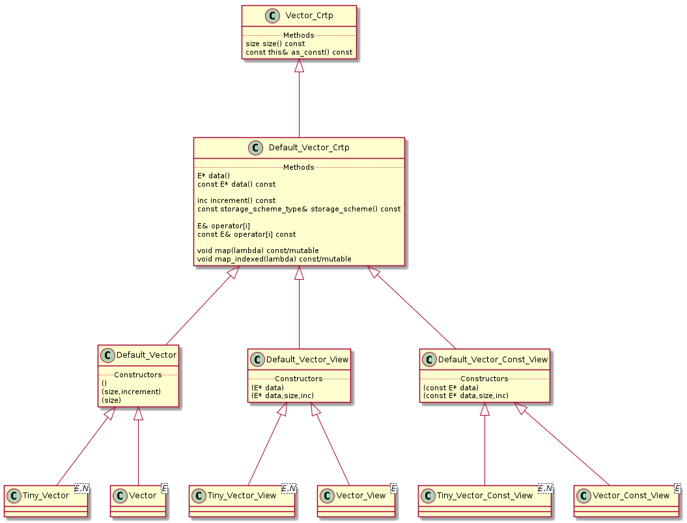

LinearAlgebra/dense/
Table of Contents
1 Role
This directory contains dense vector/matrix containers. It uses crtp.
The genericity is obtained by using a design by policies to define:
- storage scheme: static size, etc…
- memory_chunk_type: std::vector, pointer etc..
The vector classes illustrate this (but the same schem is used for matrix etc…):
template <typename IMPL> class Default_Vector_Crtp : public Crtp_Find_Impl<Default_Vector_Crtp, IMPL, Vector_Crtp> { /////////// // Types // /////////// // public: using base_type = Crtp_Find_Impl<Default_Vector_Crtp, IMPL, Vector_Crtp>; using exact_type = typename base_type::exact_type; using traits_type = typename base_type::traits_type; // Note: take habit to put storage first, as it can be used to // compute required_capacity needed by memory_chunk using storage_scheme_type = typename traits_type::storage_scheme_type; using memory_chunk_type = typename traits_type::memory_chunk_type; ///////////// // Members // ///////////// // protected: storage_scheme_type _storage_scheme; memory_chunk_type _memory_chunk; }
The policies are define thanks to Crtp_Type_Traits:
template <typename T, typename N_TYPE, typename INCREMENT> struct Crtp_Type_Traits<LinearAlgebra::Default_Vector<T, N_TYPE, INCREMENT>> { using storage_scheme_type = LinearAlgebra::Default_Vector_Storage_Scheme<N_TYPE, INCREMENT>; using memory_chunk_type = LinearAlgebra::Default_Memory_Chunk<T, typename storage_scheme_type::required_capacity_type>; // ... };
See:
1.1 Vector classes
The hierachy is as follows:

1.2 TODO Matrix classes
Must follow the same scheme as Vector classes.
2 Other important files
| matrix_crtp_fwd.hpp | |
| matrix_crtp.hpp | |
| matrix.hpp | |
| matrix_special_structure_enum.hpp | define Matrix_Special_Structure_Enum |
| matrix_storage_scheme.hpp | loop_over_indices |
| memory_chunk.hpp | |
| vector_crtp_fwd.hpp | |
| vector_crtp.hpp | |
| vector_crtp_size_utils.hpp | define get_size() |
| vector.hpp | |
| vector_storage_scheme.hpp |
2.1 get_size()
Do not forget this function exist!
2.2 loop_over_indices Performance
Important as use by maps function
3 Backlinks
4 5 Backlinks
4.2 LinearAlgebra/dense/
| vector_crtp_size_utils.hpp | define get_size() |
| matrix_storage_scheme.hpp | loop_over_indices |
Must follow the same scheme as Vector classes.